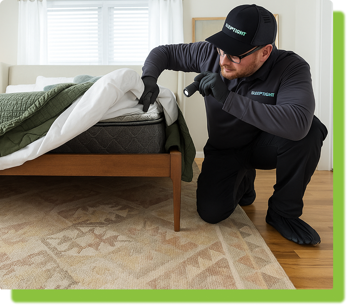

Our Proven Process
Our Proven Process

1
Inspection
We inspect your property inside and out to identify pest activity and entry points.
2
Treatment
Targeted interior and exterior treatments eliminate pests where they live and breed.
3
Prevention
Perimeter barriers and yard protection keep pests from re-entering your property.
4
Monitoring
Regular inspections and follow-ups ensure your home or business stays pest-free year-round.